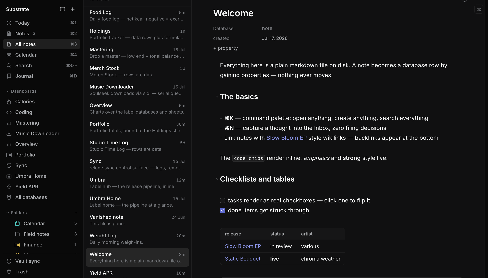
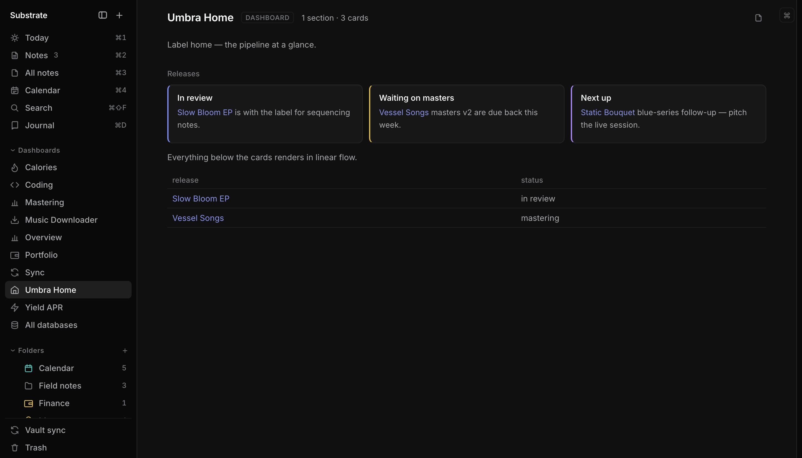

04 / the app
This is Substrate.
A vault in the app: notes on the left, live-rendered markdown in the middle, properties on the note. The sidebar’s “databases” and “dashboards” are just folders of files like this one.

~/Vault · a live vault in the app · the Welcome note is a markdown file with frontmatter, checkboxes, and an inline database view
05 / files
The files are the app.
No proprietary database underneath — the markdown on your disk is the only source of truth. Substrate is just the fastest window onto it. Edit a file in any other app and the change is live before you switch back.
$ cat Contacts/Noa.md --- type: contact role: artwork status: active --- Brief sent for [[Slow Bloom EP]] — stems for the motion piece due Friday. # a text file. also a database row. $ echo "- [ ] send stems to Noa" >> Today.md
Frontmatter is the schema. Grep is a query engine.
Typed properties live as YAML on top of each note; saved views, templates, and inline editing in the app, rg and sed outside it. That echo above? The checkbox is in the app before you ⌘-tab back — external edits are the designed path, not a recovery mode.
FORMAT SPEC PUBLISHED — docs/vault-format.md
06 / agents
Agents don’t get an API here.
They get the files.
No UI-only state, boring parseable formats, external edits picked up live — an agent filing your inbox at 3am is a designed-for use, not a hack. And once agents can read everything on your machine, a vault that never leaves it uninvited stops being a nerd feature and becomes the point.
Not “AI-powered.” Legible.
There’s no model inside Substrate and no tokens to buy. The claim is stronger and cheaper: the vault is plain text with documented conventions, so any agent — Claude, a cron script, you in a terminal — can read and write it directly.
EVERYTHING THE UI DOES IS ACHIEVABLE BY EDITING FILES.
agent › file today's captures read Inbox/ — 4 untyped notes write type: contact → Contacts/Noa.md write type: release → Releases/Vessel Songs.md write type: task ×2 → Tasks/ vault › watcher: 4 files changed, index live
07 / features
Narrow, but finished.
A smaller surface done properly beats a wide surface at 80%.
08 / surfaces
Dashboards over text files.
Sheets are formula tables in plain text; dashboards bind stat cards, status cards, and live database views to the results. Below: a label pipeline reading from the same markdown you just saw.

Umbra Home.md · a dashboard note · every number and row traceable to a text file on disk
09 / principles
Built on a few stubborn ideas.
Files are the only truth.
No export button, because there is nothing to export from.
Nothing phones home.
No account, no telemetry, no cloud — your vault never leaves your machines uninvited.
Speed is a feature, not a benchmark.
The app should feel like a room, not a machine.
Agent-native, by design rule.
Boring formats, documented conventions — the agent uses the same door you do.
Built for one person first.
Not a product committee — a daily driver. Every feature exists because someone needed it that week.
$ don’t trust the copy — read the source
10 / switching
Leaving Notion?
Same databases, same views, same everything-in-one-place — minus the loading spinners, the vendor account, and the API between your agent and your own notes.
1
Export from Notion
Settings → Export all workspace content (markdown & CSV).
2
Drop it in your vault
Pages are markdown already — notes the moment they land. Database rows arrive as CSV; typing them as frontmatter is the real migration.
3
Migrate one database at a time
Lane by lane — each database lands whole before the next begins. No big-bang cutover.
honesty clause: Notion is still better at real-time multiplayer collab. Substrate is single-user by design — that’s why it’s fast.
11 / price
Free and open source. That part’s simple.
Same app, same features, your call. A donation nag may appear, rarely — one euro makes it disappear forever, and the nag itself tells you how to build the version without it.
12 / faq
Fair questions.
Where is my data, exactly?
In ~/Vault (or any folder you choose): markdown files with YAML frontmatter, plus a small .vault/ folder of plain JSON for schemas and views. You can read all of it in a text editor right now.
Isn’t this just Obsidian?
Closest neighbor, different bet. Obsidian is closed source, and its databases are views — Bases reads your frontmatter into tables and cards, but sheets, dashboards, and richer schemas still live in per-plugin formats. Substrate is open source, and typed databases, sheets, and dashboards are the native core: one documented file convention your agent can rely on end to end.
What happens if the project dies?
Nothing. Your vault is markdown — every editor on earth opens it. That is the whole point of building on files instead of a database.
Does it phone home?
No. No telemetry, no analytics, no account, no update pings you didn’t ask for. The source is open so you don’t have to take our word for it.
Is the App Store build different?
No — same app, same features. You’re paying for the signed one-click install and auto-updates, and to support development. The listing will say exactly this.
iPhone? Windows? Linux?
macOS first. An iOS build with end-to-end encrypted sync is in active development. Windows/Linux aren’t planned — the roadmap follows its owner’s needs, honestly stated.